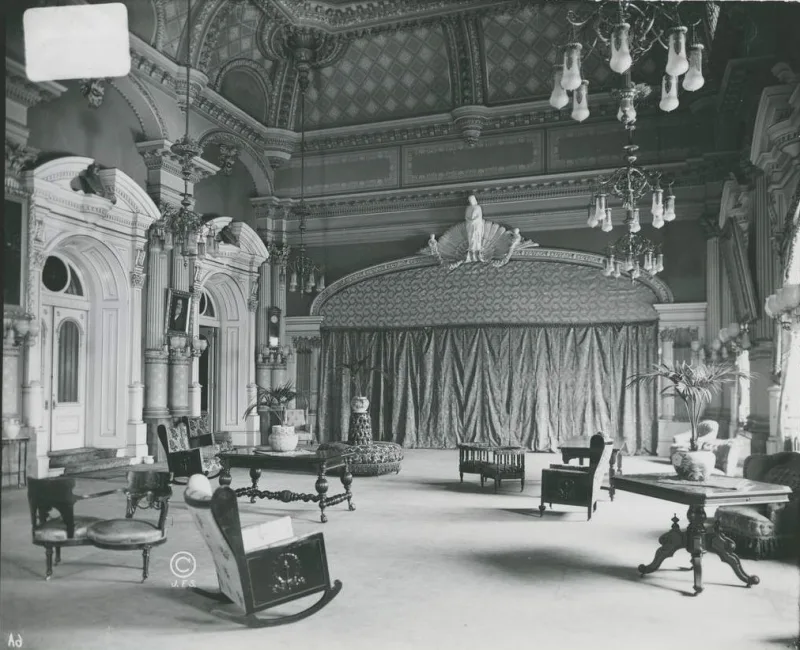
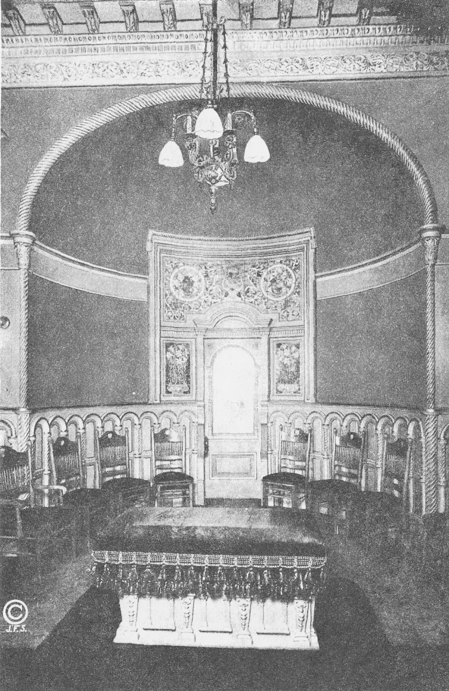
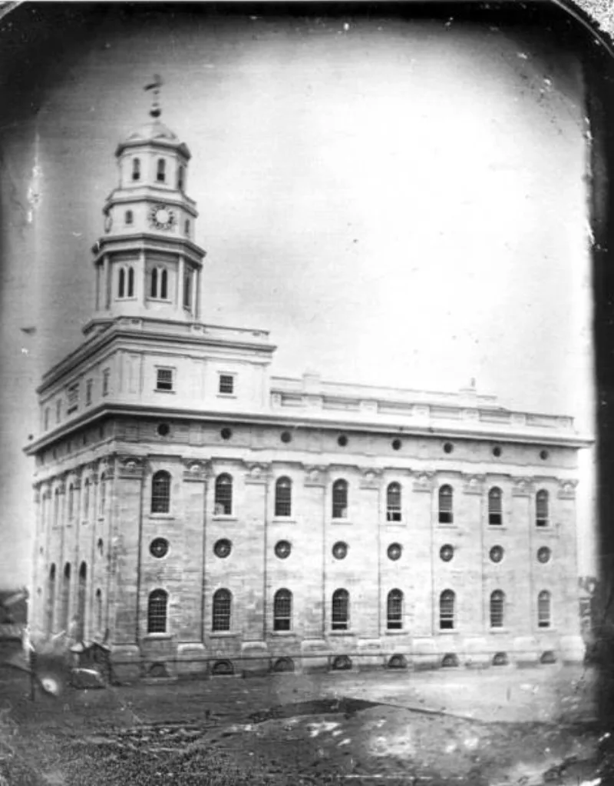

Their own church publications admit these facts. You can make this point from LDS sources alone.
An ordinance above the endowment that most members have never heard of. In it a couple's calling and election is made sure, and exaltation is sealed upon them.
D&C 131:5 calls that "the more sure word of prophecy." D&C 132:49 stands behind it too. It has been given since 28 September 1843, by invitation of the First Presidency only.
David John Buerger's study in Dialogue in 1983 documents thousands performed in the nineteenth century. Then a sharp cutback, and near-total silence in the twentieth.
The church stopped publishing figures by the 1930s.
Mormonr, an apologetic site, states that the ordinance exists, that it is by invitation, and that it "isn't generally taught in Church meetings or in Church publications." It also states that teachers are instructed not to discuss it or answer questions about it.
In 2012. Tom Phillips, a former stake president, received the rite from the apostle M.
Russell Ballard. He published a detailed firsthand account and told his story on Mormon Stories.
They do not deny it exists; they defend its privacy. Mormonr calls it sacred rather than secret, handled like other temple matters.
There is biblical precedent for anointing individuals, since priests and kings were anointed, and Jesus spoke of mysteries given to some and not others. The blessing is conditional, not a guarantee, so it does not remove the need to endure faithfully.
The rarity is prudence. And ordinary members lose nothing, because the same blessings are held out to all, and ordinances missed in this life may be received later.
They do not deny it exists. They defend its privacy.
Mormonr calls it sacred rather than secret, handled like other temple matters. There is biblical precedent for anointing people; priests and kings were anointed.
Jesus spoke of mysteries given to some and not others. The blessing is conditional, not a guarantee, so it does not remove the need to endure.
The rarity is prudence. And ordinary members lose nothing.
The same blessings are held out to all, and ordinances missed in this life may be received later.



Sacred, not secret: the blessing is conditional, and the same hope is held out to all.
Defenders do not deny that the ordinance exists. They defend its privacy.
Mormonr frames it as sacred rather than secret. It is treated with the same reserve as other temple matters. It is not a plot.
They note that the Bible anoints individuals. Priests and kings were anointed. And Jesus spoke of mysteries given to some and not to others.
They stress that the blessing is conditional. It is not a flat guarantee, so it does not remove the need to endure in faith.
The rarity, they argue, is prudence about a blessing that could be misread. And ordinary members lose nothing. The same blessings are held out to all the faithful, and what is missed in this life may be received later.
They admit it all: the only argument is over the word secret.
This is graded admitted because their own side confirms every factual element. The ordinance exists. It is given by invitation of the highest leadership. It is absent from public teaching. And members are explicitly instructed not to discuss it.
The only dispute is what to call it, sacred against secret, and whether a conditional sealing differs much from a guaranteed one.
The force here is untouched by that framing. A two-tier system, in which an inner circle receives a hidden assurance ordinary members do not know exists, stands in stark contrast to the New Testament.
There, assurance is proclaimed openly and offered to all believers on the basis of faith in Christ. 2 Peter 1:10 addresses every reader of a public letter, not the initiates of a private rite.